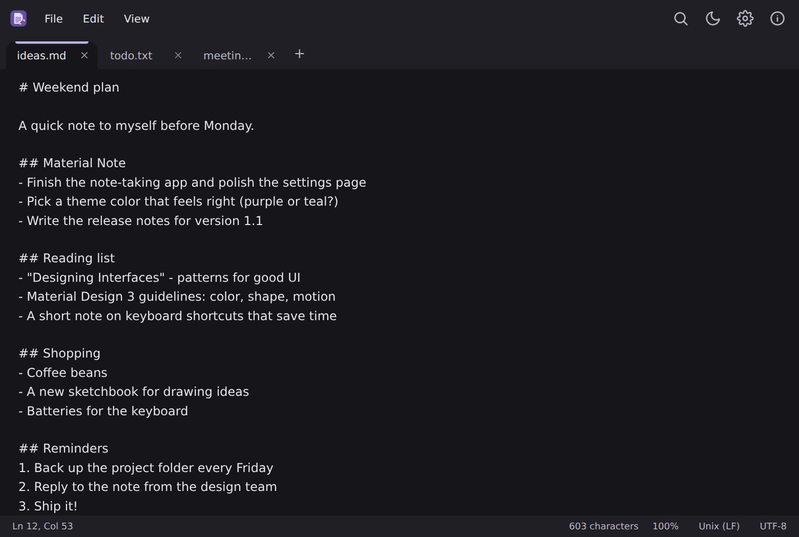
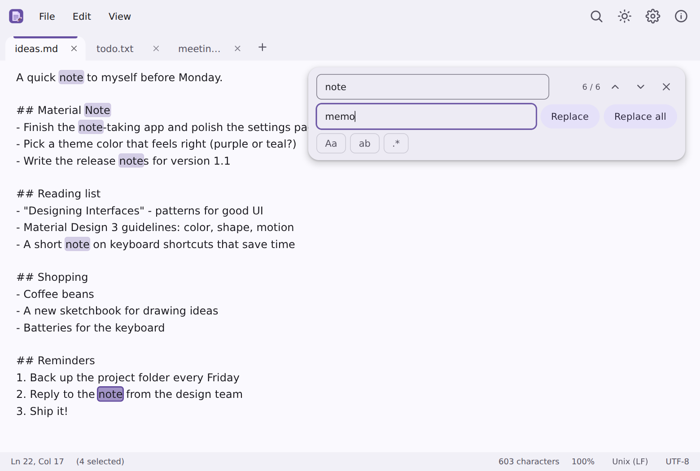
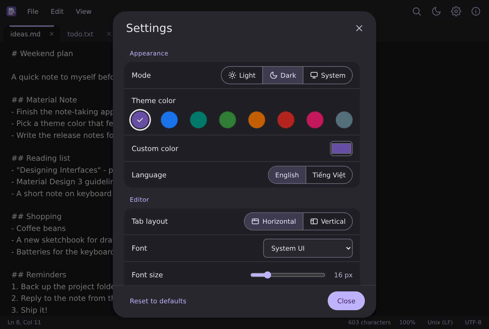

Tabs, your way
Work on many files at once with horizontal or vertical tabs, drag & drop to open and an unsaved-changes prompt per tab.
A lightweight tabbed notepad designed with Material Design 3. Starts instantly, remembers where you left off and gets out of your way while you write.
Small, quick and thoughtfully designed — with the power features you actually reach for.
Work on many files at once with horizontal or vertical tabs, drag & drop to open and an unsaved-changes prompt per tab.
Reopens your files on startup with unsaved text, cursor and scroll position intact, plus a recent files list.
Match case, whole word and regular expressions, with every match highlighted and a live counter.
Light, dark or follow the system, with preset Material colors or any custom color you choose.
Remember the window size you like, or always start maximized. You decide in Settings.
Detects your system language automatically and switches at runtime whenever you like.
Built with Tauri and Rust, so it opens in a blink and sips memory — even with large files.
Ripples, menu and dialog transitions that respect your reduced-motion setting.
Your notes stay on your computer. No account, no tracking, no network access.
Pick a seed color and the whole palette — surfaces, buttons, highlights — is generated for you. Try it right here, this page uses the same engine.




Download Material Note for Windows — it's free, open source and installs in seconds.
Version 1.1.0 · Windows 10 / 11 (64-bit) · installs for the current user
Yes. It is open source under the MIT license — use it, change it and share it.
The installer targets 64-bit Windows 10 and 11 (WebView2 is required and is already included in Windows 11). Since it is built with Tauri, you can also build it yourself for macOS and Linux.
Notes are plain text files on your own disk, wherever you save them. Settings and your last session stay on your computer; nothing is sent anywhere.
With “Reopen files on startup” on (default), unsaved text is kept and restored the next time you open the app. Turn it off in Settings to get the usual “Save changes?” prompt instead.